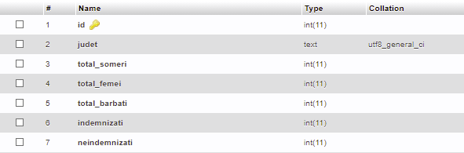
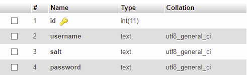
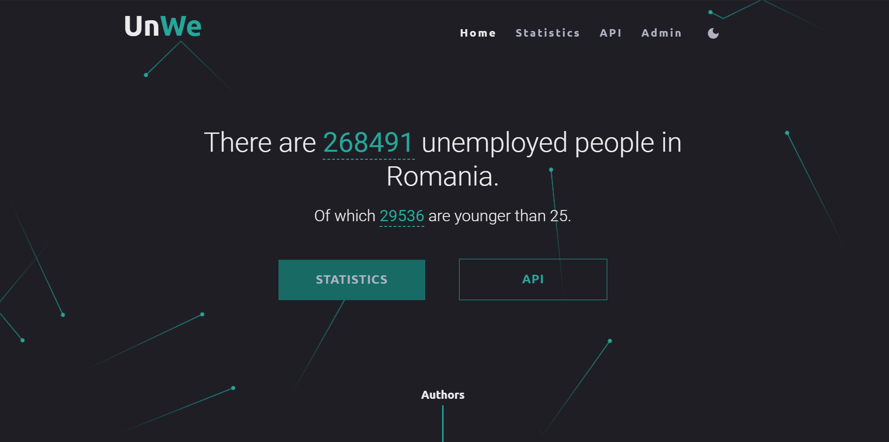
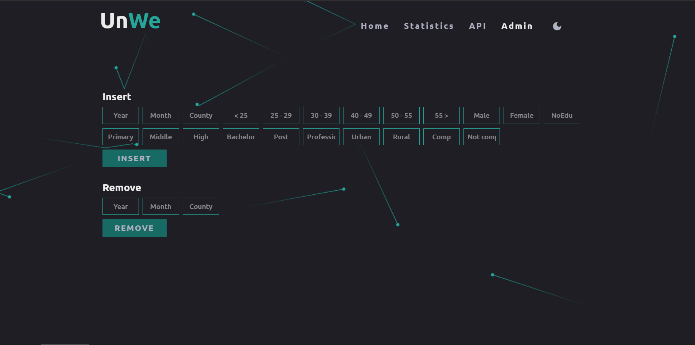

Să se realizeze un instrument Web de vizualizare și de comparare multi-criteriala (pe județe, nivel de educație, grupe de vârstă, mediu, perioadă de timp etc.) a datelor publice referitoare la șomajul din România pe ultimele N luni (minim 12). De asemenea, Statisticile, plus vizualizările generate – minim 3 maniere, plus cele cartografice pe baza unor servicii Web de profil – vor putea fi exportate in formatele CSV, SVG si PDF.
Șomajul reprezintă o statistică relevantă pt fiecare țară și multe studii se bazează pe datele referitoare la acesta.
Considerăm că este important să existe o unealtă pentru vizualizarea și compararea ușoară a datelor de șomaj în România.
Ne propunem să face o aplicație web cu acest scop și de asemenea să oferim un API care să fie ușor de folosit pentru alte aplicații.
În diagrama de mai jos este descrisă arhitectura aplicație noastre:
La nivel de client, modulele importante sunt cele de generat și de exportat diagramele. La nivel de server, Query Manager este modulul ce procură statisticile cerute de către utilizatori ori prin intermediul aplicației ori prin API.
Pentru stocarea datelor am folosit o bază de date MySQL găzduită pe
Heroku
, același mediu în care am făcut deploy. Am creat un singleton DatabaseManager care se ocupă de administrarea conexiunii și de executarea
query-urilor. Vom prezenta structura tabelelor din această bază de date.
Acest tabel conține datele ce urmează a fi afișate ca statistici sau accesate prin API. Screenshot-ul cuprinde doar o parte din tabel.
Acest tabel conține datele de conectare ale administratorilor. Acesta, împreună cu un tabel de tokenuri ajută la menținerea sesiunii unui administrator.

Am creat o clasă Query care se ocupă ocupă de toate query-urile la API. Primește comanda, validează datele și apoi returnează
rezultatul query-ului.
Query-routes este route handler-ul ce se ocupă de uri-urile rutelor pe care ar putea să facă cerere utilizatorul.
$query_routes = [
[
'method' => 'GET',
'url' => '/api/query/:county',
'handler' => 'queryDatabaseForCounty'
],
[
'method' => 'GET',
'url' => '/api/query/:county/:year',
'handler' => 'queryDatabase'
],
[
'method' => 'GET',
'url' => '/api/query/:county/:year/:month',
'handler' => 'queryDatabaseMonth'
],
[
'method' => 'GET',
'url' => '/api/query/',
'handler' => 'advancedQuery'
]
];
Pagina Home conține informații pe scurt referitoare la numărul de șomeri din România, numărul de șomeri din județul tău, un buton ce duce la statisticile cu aceste informații și alt buton care duce la API.

În această pagină, utilizatorul alege ce județe dorește să vizualizeze prin intermediul barei de căutare sau a hărții.
De asemenea, acesta poate alege între un line-graph, bar plot sau pie chart, între categoriile de date (vârsta, gen, educație
mediu, îndemnizare) și perioada pentru care se afișează datele.
Acesta poate descărca diagrama generată în format SVG, CSV sau PDF.
În această pagină se oferă documentația API-ul oferit de website-ul nostru.
Este prezentat formatul fișierului JSON ce trebuie trimis la server pentru a putea primi rezultatele dorite
și cateva exemple de cereri și răspunsuri.
În această pagină te conectezi ca administrator și ai posibilitatea de a adăugat sau șterge intrări din baza de date

Fundalul paginii are o animație creată din buline care se plimbă și lasă în urmă o linie cu opacitate ce scade în timp.
Efectul creat dinamizează background-ul paginii.
Bulinele sunt de fapt o imagine care își schimbă poziția în timp și linia lăsată în urmă este un array de linii a căror opacitate scade
cu cât se îndepărtează mai tare de bulină.
Bulinele se pot "izbi" de unele elemente HTML, schimbându-și traiectoria, simulând efectul unui ricoșeu. Pentru a face acest lucru,
elementele de care se pot izbi au clasa "collision-box".
Coliziunile cu elementele HTML se verifică cu următoare funcție:
function intersects(line1X1, line1Y1, line1X2, line1Y2, line2X1, line2Y1, line2X2, line2Y2) {
var det, gamma, lambda;
det = (line1X2 - line1X1) * (line2Y2 - line2Y1) - (line2X2 - line2X1) * (line1Y2 - line1Y1);
if(det === 0) {
return false;
} else {
lambda = ((line2Y2 - line2Y1) * (line2X2 - line1X1) + (line2X1 - line2X2) * (line2Y2 - line1Y1)) / det;
gamma = ((line1Y1 - line1Y2) * (line2X2 - line1X1) + (line1X2 - line1X1) * (line2Y2 - line1Y1)) / det;
return (0 < lambda && lambda < 1) && (0 < gamma && gamma < 1);
}
};
În primul rând, pentru o utilizare ușoară a search-bar-ului, am implementat-o astfel încât să nu depindă de diacritice, litere mari/mici sau spații.
//fac aceste transformari ca sa nu conteze daca scrii cu diacritice sau nu
var normalizedCountyName = countyIdtoNameMap[id].toLowerCase();
normalizedCountyName = normalizedCountyName.replace(/ș/g, 's');
normalizedCountyName = normalizedCountyName.replace(/ț/g, 't');
normalizedCountyName = normalizedCountyName.replace(/ă/g, 'a');
normalizedCountyName = normalizedCountyName.replace(/â/g, 'a');
normalizedCountyName = normalizedCountyName.replace(/î/g, 'i');
//also, scoatem whitespace-ul
var normalizedInput = searchInput.toLowerCase().trim();
normalizedInput = normalizedInput.replace(/ș/g, 's');
normalizedInput = normalizedInput.replace(/ț/g, 't');
normalizedInput = normalizedInput.replace(/ă/g, 'a');
normalizedInput = normalizedInput.replace(/â/g, 'a');
normalizedInput = normalizedInput.replace(/î/g, 'i');
Pentru fiecare caracter introdus în search-bar, se actualizează județele afișate. Ca un județ să fie afișat, acesta trebuie să nu fie deja adăugat în lista de județe deja selectate și să înceapă cu șirul de caractere din search-bar normalizat.
Am ales să folosim un
svg
oferit de
amCharts
pentru a face o hartă politică interactivă. Fiecare path din svg reprezintă un județ, care este memorat într-o listă de județe:
counties = document.getElementsByTagName('path');
Pentru fiecare element, adăugam un event listener pentru a-l face interactiv și pentru a reacționa la click-ul utilizatorului.
Pentru afișarea chart-urilor am folosit librăria oferită de Charts.js . Datele diagramelor se actualizează odată cu fiecare județ selectat și pot fi afișate în 3 tipuri diferite(line, bar, pie);
let chart = new Chart(ctx, {
type: 'line',
data: {
labels: ['Red', 'Blue', 'Yellow', 'Green', 'Purple', 'Orange'],
},
options: {
responsive: true,
maintainAspectRatio: false,
animation: {
duration: 400
},
scales: {
yAxes: [{
ticks: {
beginAtZero: true
}
}]
}
}
});